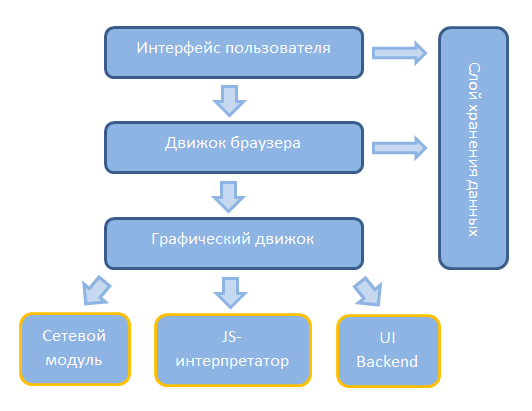

Что происходит при клике на ссылку (высокий уровень детализации)
Можно схематично представить основные компоненты браузера:

Далее постараюсь наиболее подробно описать процесс, начиная от клика по ссылке yandex (например, со страницы с результатами поиска в гугле по слову "yandex" ) и заканчивая отрисовкой страницы на экране.
- Клик по ссылке инициирует событие, которое принимается движком браузера и делегируется графическому движку
- Графический движок подгружает html-парсер, который получает значение атрибута href дескриптора <a>, извлекая данные из структуры DOM-дерева страницы, полученного после синтаксического анализа html-кода.
- Дескриптор <a> и его атрибут href привязаны к объектам в DOM-дереве, построенным на этапе загрузки страницы
- После парсинга производится обращение к runtime-instance объекту (структура/класс), описывающей аттрибут href и оттуда извлекается значение
- Необходимые для операции данные сохраняются на время сеанса или кэшируются
- Производится поиск запрашиваемой страницы в кэше, или, если не нашлось, то в HOST (C:\WINDOWS\system32\drivers\etc\hosts)
- Далее в дело вступает компонент, реализующий функции для работы с сетью. Он же осущестляет и кэширование полученных данных.
- Если поиск не дал результатов, запрашивается ip-адрес у ближайшего DNS веб-сервера.
- Формируется структура сокета: ip + порт
- Производится соединение с сервером при использовании сокета (минуя промежуточные сервера)
- Если сервер доступен, то формируется http-сообщение с заголовком вида (взято из профайлера браузера Mozilla):
- Далее браузер слушает порт 80.
- Если сообщение получено и код = 200 (ответ получен), то производится парсинг содержимого (html-парсер)
- Ответ от сервера обычно присылается с заголовком такого вида:
- Далее начинается самое интересное. Содержимое запрошенного документа блоками по протоколу сетевого уровня обрабатывается сетевыми средствами браузера.
- Графический движок получает данные, конвертированные на предыдущем этапе, в понятном ему виде.
- Парсинг HTML-кода и преобразование в DOM-дерево
- В ходе лексического анализа символы html разбиваются на токены (открывающие и закрывающие тэги, названия и значения атрибутов). Алгоритм лексического анализа, реализованного в графических движках, представляет собой автомат с конечным числом состояний. Следующее состояние определяется на основе символов входной последовательности предыдущей итерации.
- При помощи синтаксического анализатора HTML весь plain-html преобразуется в DOM-дерево, представляющее собой структуры/экземпляры классов/стандартные типы компилируемых языков. Анализатор находит токен, передает конструктору дерева, переходит к следующему элементу.
- На следующем этапе браузер помечает документ как интерактивный и начинает анализ отложенных скриптов, которые необходимо выполнить после завершения анализа документа. Состояние документа меняется на "готово", вызывается событие load.
- Далее следует анализ css и javascript. Для них также используются предопределенные структуры модуле отображения (графический движок). В отличие от HTML, в CSS используется бесконтекстная грамматика, что позволяет, используя восходящий/нисходящий анализатор, формировать CSS-дерево объектов.
- При обнаружении <script> синтаксический анализ документа откладывается до завершения выполнения скрипта. Для внешнего скрипта запрашиваются сетевые ресурсы. Все это происходит синхронно (в HTML 5 можно пометить скрипт как аснхронный для выполнения в другом потоке).
- Далее создается еще одна структура - дерево отображения. В нем визуальные элементы размещаются в том порядке, в каком их необходимо вывести на экран. Дерево отображения является проекцией DOM-дерева и служит для того, чтобы отрисовка содержания выполнялась в правильном порядке. Для построения дерева вычисляются таблицы стилей.
- Для расчета размера и положения объекта отображения при включении в дерево применяется ряд действий (компоновка).
- Далее следует этап рендеринга. Для каждого объекта отображения вызывается метод отрисовки, результат выводится на экран. Для отрисовки используется компонент инфраструктуры пользовательского интерфейса. Отрисовываться может как все дерево целиком, так и отдельные элементы.
- После загрузки и рендеринга страницы основной поток браузера переключается в цикл ожидания событий
- Ну вот, собственно, и все. Результат мы можем лицезреть на экране.
GET / HTTP/1.1 Host: www.yandex.ru User-Agent: Mozilla/5.0 (Windows NT 6.1; WOW64; rv:15.0) Gecko/20100101 Firefox/15.0 Accept: text/html,application/xhtml+xml,application/xml;q=0.9,*/*;q=0.8 Accept-Language: ru-ru,ru;q=0.8,en-us;q=0.5,en;q=0.3 Accept-Encoding: gzip, deflate Connection: keep-alive Referrer: [адрес, откуда осуществлен переход (если таковой имеется)] Cookie: (если используются)
HTTP/1.1 200 Ok Via: 1.1 CERBERUS Connection: Keep-Alive Proxy-Connection: Keep-Alive Content-Length: 96770 Expires: Mon, 03 Sep 2012 11:28:47 GMT Date: Mon, 03 Sep 2012 11:28:47 GMT Content-Type: text/html; charset=UTF-8 Server: nginx Cache-Control: no-cache,no-store,max-age=0,must-revalidate Last-Modified: Mon, 03 Sep 2012 11:28:47 GMT P3P: policyref="/w3c/p3p.xml", CP="NON DSP ADM DEV PSD IVDo OUR IND STP PHY PRE NAV UNI" Set-Cookie: t=p; Domain=.yandex.ru; Path=/ x-frame-options: DENY X-XRDS-Location: http://openid.yandex.ru/server_xrds/